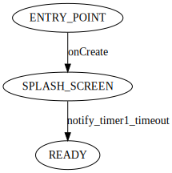

no_network_splash_screen_controller-NoNetworkSplashScreenControllerStateMachine.svg

state_machine('NoNetworkSplashScreenControllerStateMachine', name:'state_machine') {
def_event :onCreate => [arg('saved_instance_state', type:'Bundle')]
def_event :onResume, :onPause
def_timer :timer1, 1000, pending_if:'not self.parent_context.isResumed()'
state(:ENTRY_POINT) {
onCreate :SPLASH_SCREEN
}
state(:SPLASH_SCREEN, timer: :timer1, entry:'self.parent_context.showSplashScreen()', exit:'self.parent_context.hideSplashScreen()') {
notify_timer1_timeout :READY
}
state(:READY, entry:'self.parent_context.onReady()') {
}
}